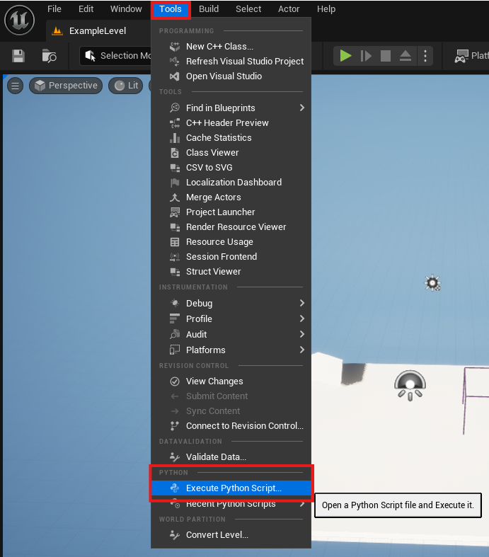
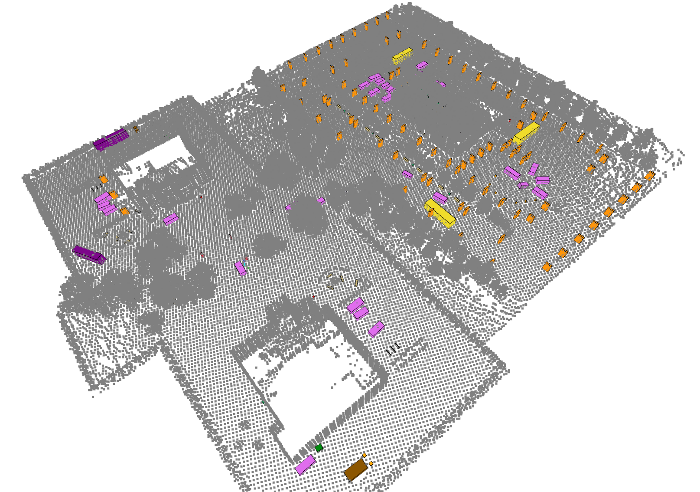

获取对象边界框
本示例演示如何根据对象的语义标签获取其边界框。由于需要在虚幻编辑器中运行 Python 脚本，因此此方法仅适用于自定义关卡。
首先，您需要配置虚幻编辑器以使用 Python。请参阅虚幻的 Python 配置指南。
确保您的自定义关卡已设置语义标签。请参阅添加自定义语义标签部分。然后，您可以使用语义标签更新 map_label2id。
import os
import csv
import unreal
def get_id(label):
# 请在 map_label2id 中填写您世界地图的标签及其对应的数字
map_label2id = {
"None": 0, # None = 0u
"Asphalt": 1, # Asphalt = 1u
"Bench": 2, # Bench = 2u
... # 在此处添加更多标签
"Any": 255 # Any = 0xFF
}
return map_label2id.get(label, -1) # 如果未找到标签，则返回 -1
if __name__ == '__main__':
# 获取编辑器参与者子系统
actor_subsystem = unreal.get_editor_subsystem(unreal.EditorActorSubsystem)
# 获取当前关卡中的所有参与者
actors = actor_subsystem.get_all_level_actors()
# 调整保存 CSV 文件的路径
csv_path = os.path.expanduser("/path/to/file.csv")
# 如果您想要朝向边界框（能紧贴着物体旋转）而不是轴对齐边界框（必须平行于世界坐标系的坐标轴），请将值设置为 False
getAxisAligned = True
# 打开 CSV 文件进行写入
with open(csv_path, mode="w", newline="") as csvfile:
writer = csv.writer(csvfile)
# 写入头
# writer.writerow(["UniqueID", "ClassName", "ClassID", "OriginX", "OriginY", "OriginZ", "ExtentX", "ExtentY", "ExtentZ"])
writer.writerow([
"UniqueID", "ClassName", "ClassID",
"OriginX", "OriginY", "OriginZ",
"ExtentX", "ExtentY", "ExtentZ",
"RotRoll_deg", "RotPitch_deg", "RotYaw_deg"
])
unique_id_counter = 0
for actor in actors:
class_name = str(actor.get_folder_path())
class_id = get_id(class_name)
if getAxisAligned:
################################################
## 选项 1：返回轴对齐的边界框 ##
################################################
origin, extent = actor.get_actor_bounds(False)
writer.writerow([
unique_id_counter,
class_name,
class_id,
origin.x, origin.y, origin.z,
extent.x, extent.y, extent.z
])
else:
############################################
## 选项 2：返回朝向边界框 ##
############################################
origin, extent = actor.get_actor_bounds(False)
rotation = actor.get_actor_rotation() # 返回虚幻引擎旋转器：俯仰角、偏航角、横滚角
writer.writerow([
unique_id_counter,
class_name,
class_id,
origin.x / 100, -origin.y / 100, origin.z / 100,
extent.x / 100, extent.y / 100, extent.z / 100,
rotation.roll, rotation.pitch, rotation.yaw,
])
unique_id_counter += 1
print(f"Saved actor bounds to {csv_path}")
要运行 Python 脚本，您可以转到“工具”>“执行 Python 脚本”。

以下是我们商务园区关卡边界框的示例。
